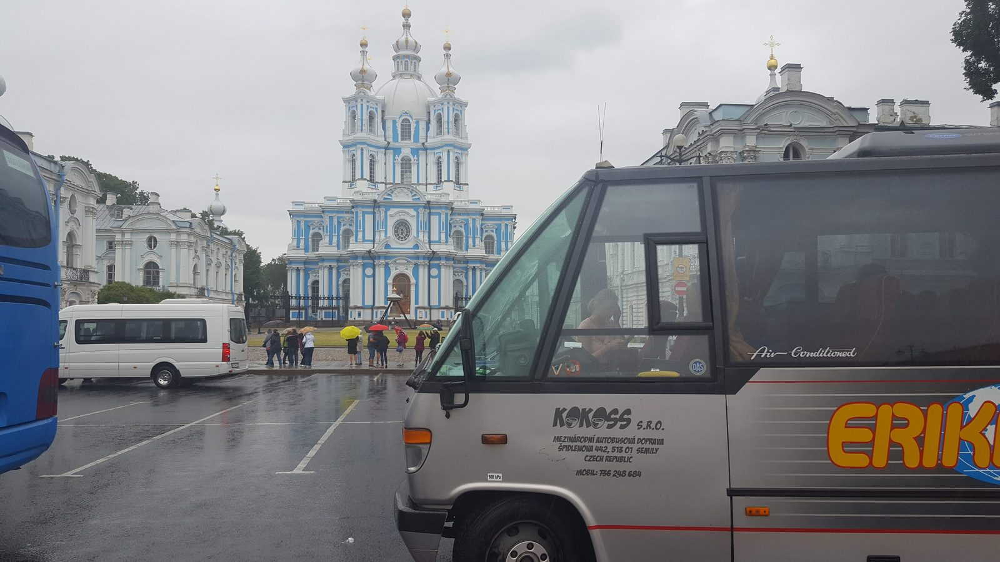
Smolny Cathedral in Saint Petersburg with coaches in the car park on a rainy day (August 2018)
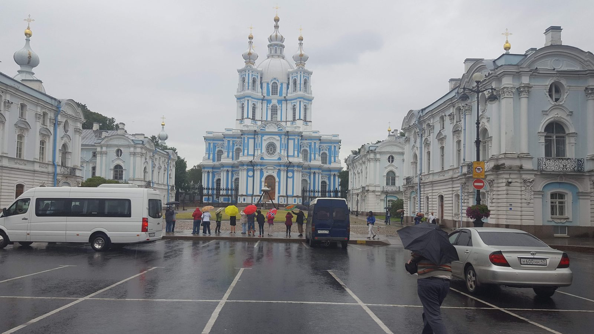
Smolny Cathedral and the convent buildings in Saint Petersburg in the rain (August 2018)
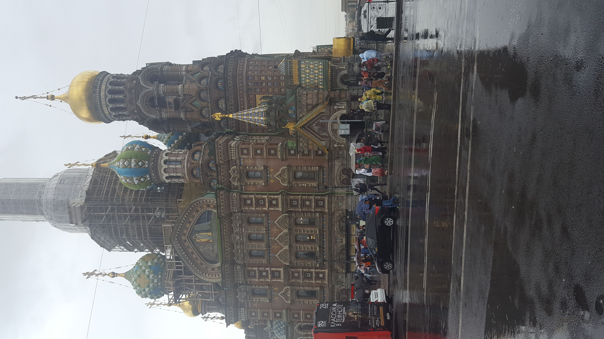
Church of the Savior on Spilled Blood in Saint Petersburg in the rain (August 2018)
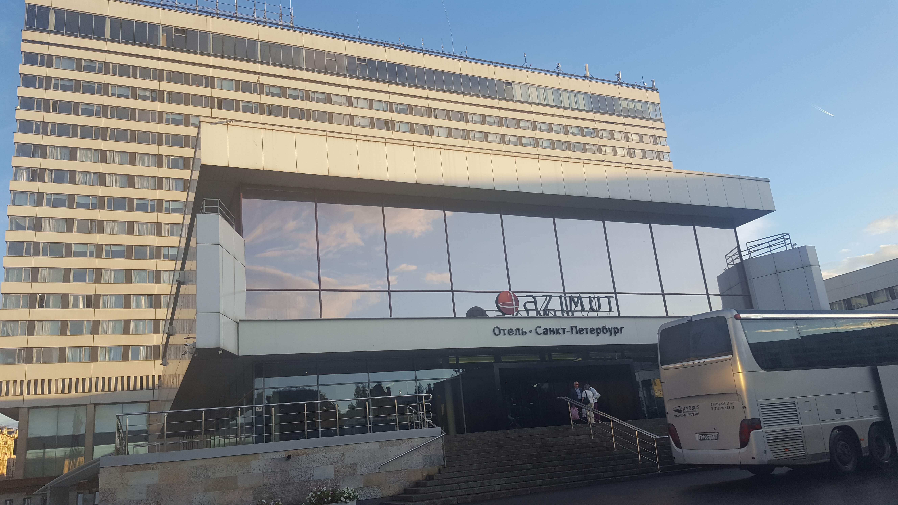
Entrance and facade of the Azimut Hotel Saint Petersburg (August 2018)
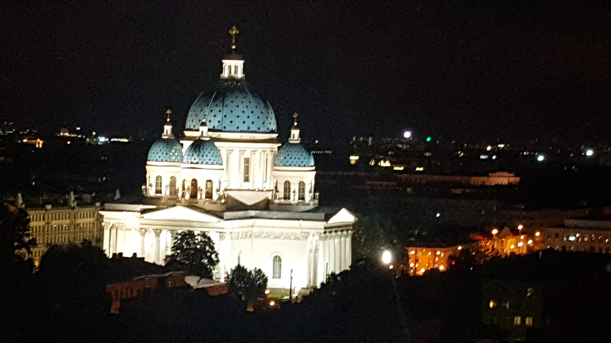
Illuminated Trinity Cathedral (Izmailovsky) in Saint Petersburg at night (August 2018)
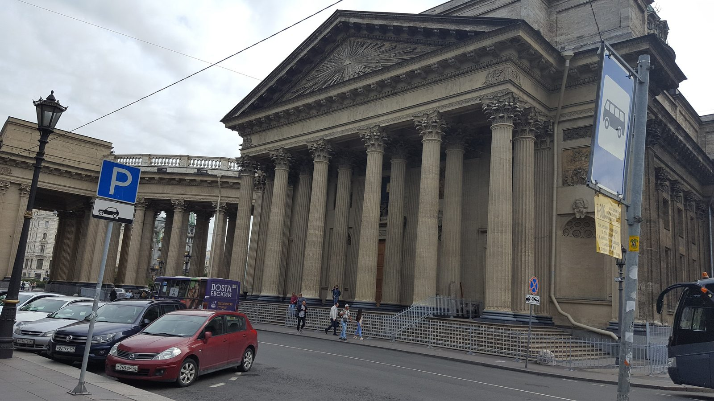
Kazan Cathedral with its colonnade on Nevsky Prospect in Saint Petersburg (August 2018)
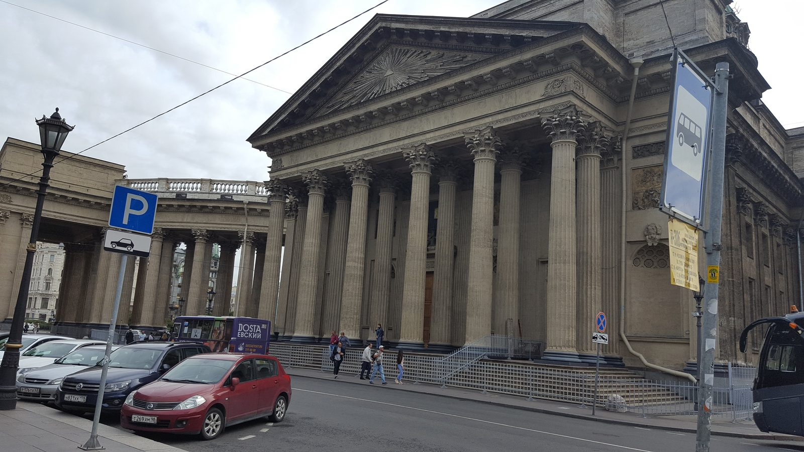
Kazan Cathedral with its colonnade on Nevsky Prospect in Saint Petersburg (August 2018)
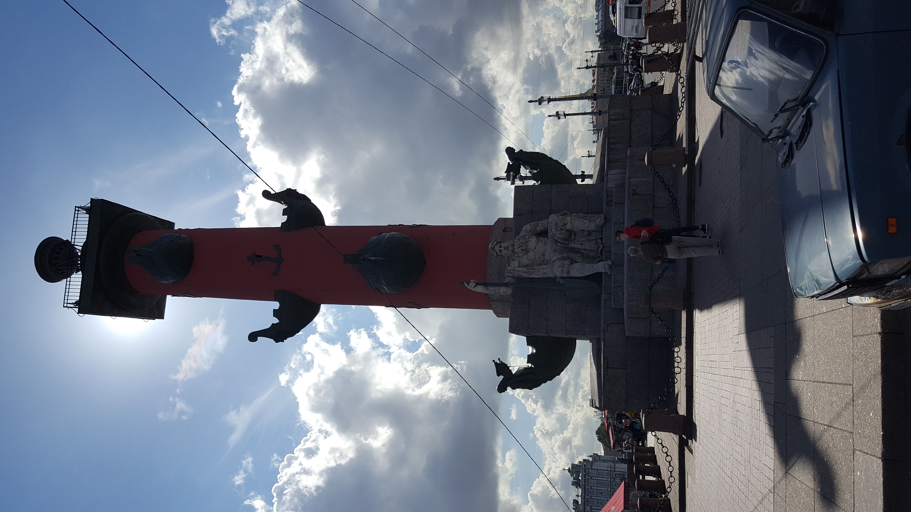
Rostral Column on the Spit of Vasilievsky Island in Saint Petersburg (August 2018)
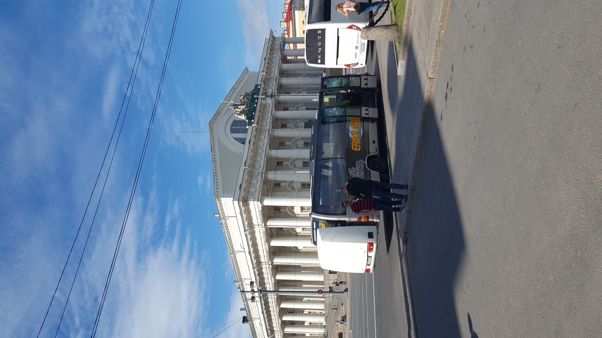
The Old Stock Exchange building on the Spit of Vasilievsky Island in Saint Petersburg (August 2018)
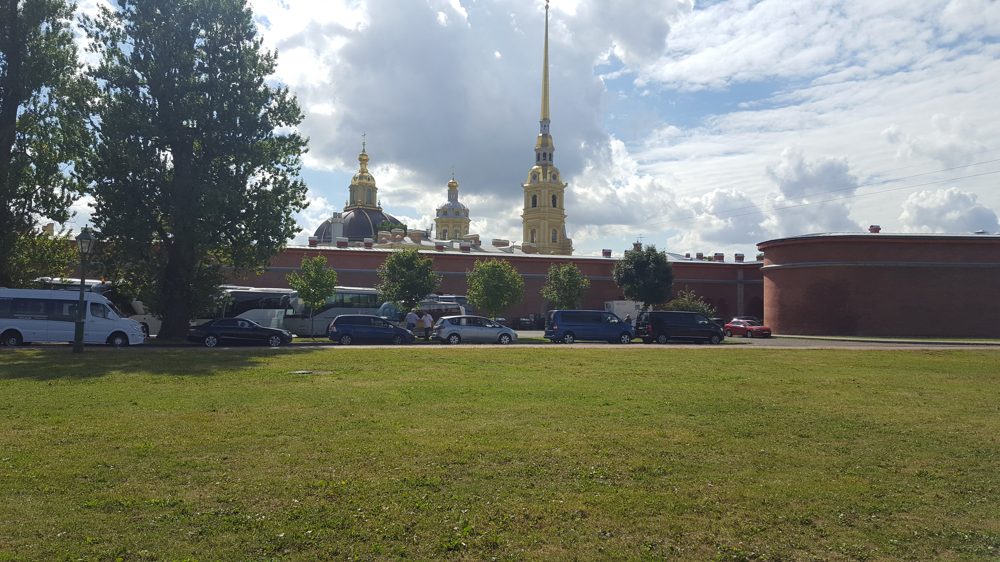
Golden spire of the Peter and Paul Cathedral above the fortress walls in Saint Petersburg (August 2018)
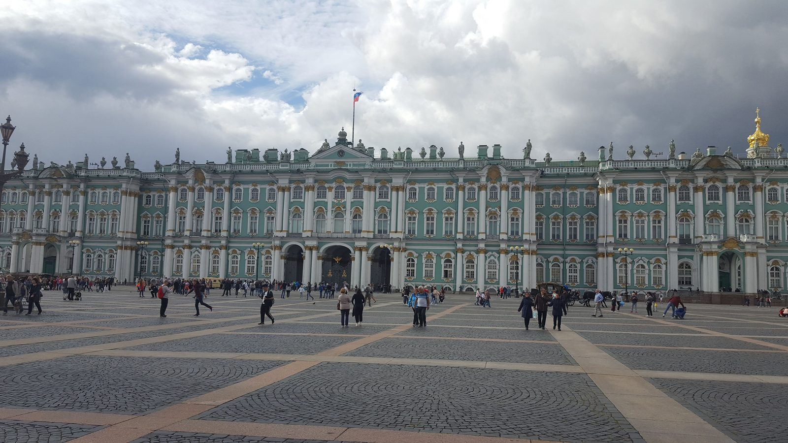
The Winter Palace seen from Palace Square in Saint Petersburg (August 2018)
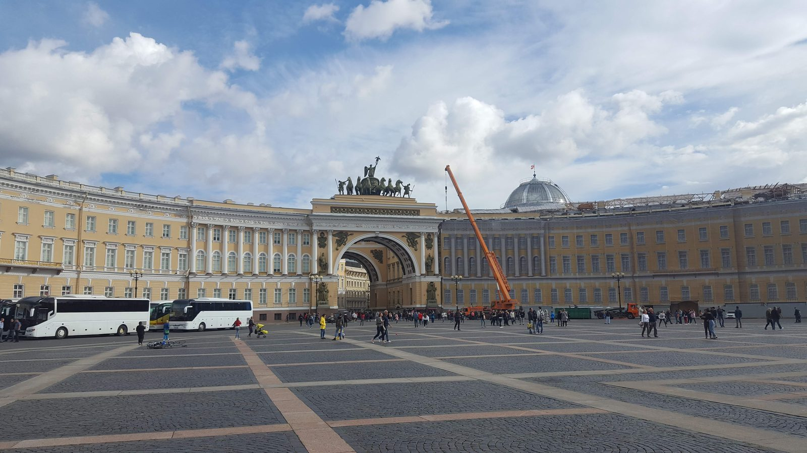
The arch of the General Staff Building on Palace Square in Saint Petersburg (August 2018)
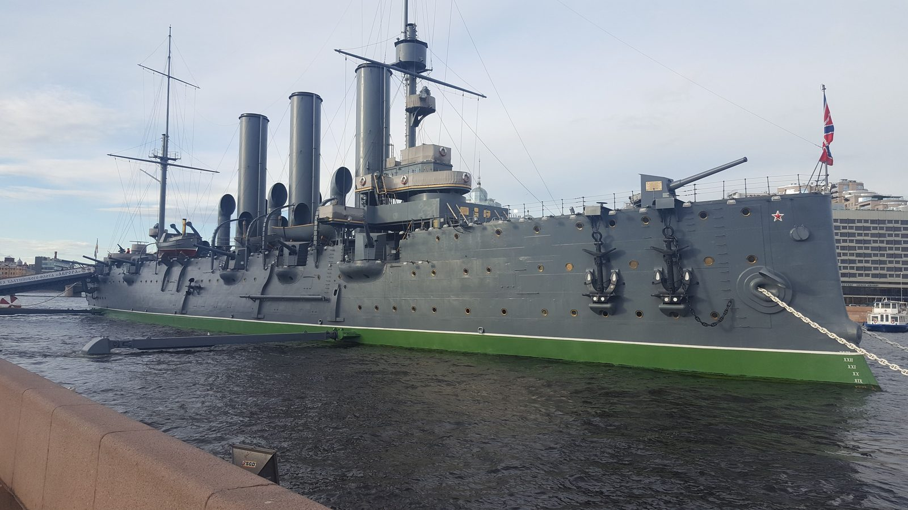
The cruiser Aurora at the embankment in Saint Petersburg (August 2018)
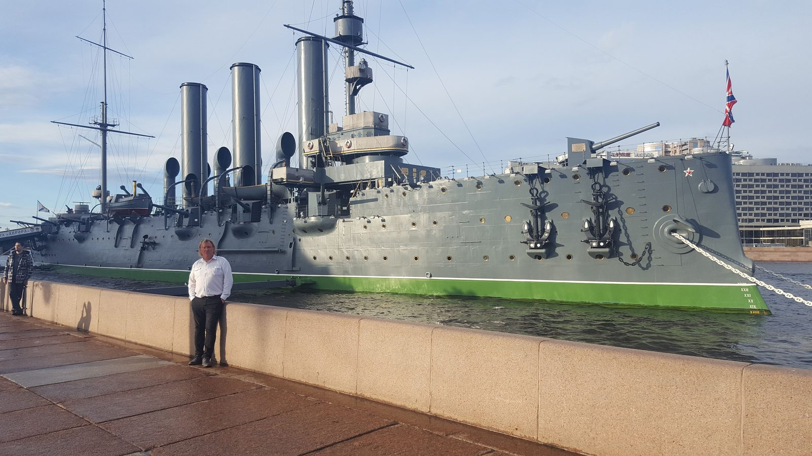
The cruiser Aurora at the embankment in Saint Petersburg (August 2018)
The cruiser Aurora at the embankment in Saint Petersburg (August 2018)
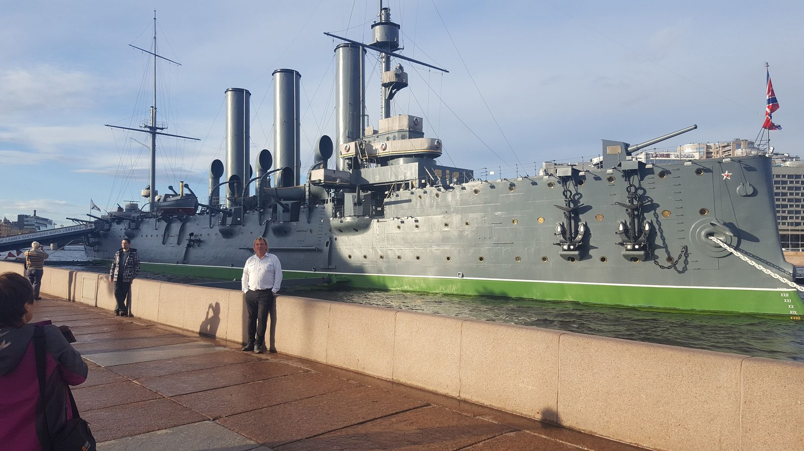
The cruiser Aurora at the embankment in Saint Petersburg (August 2018)
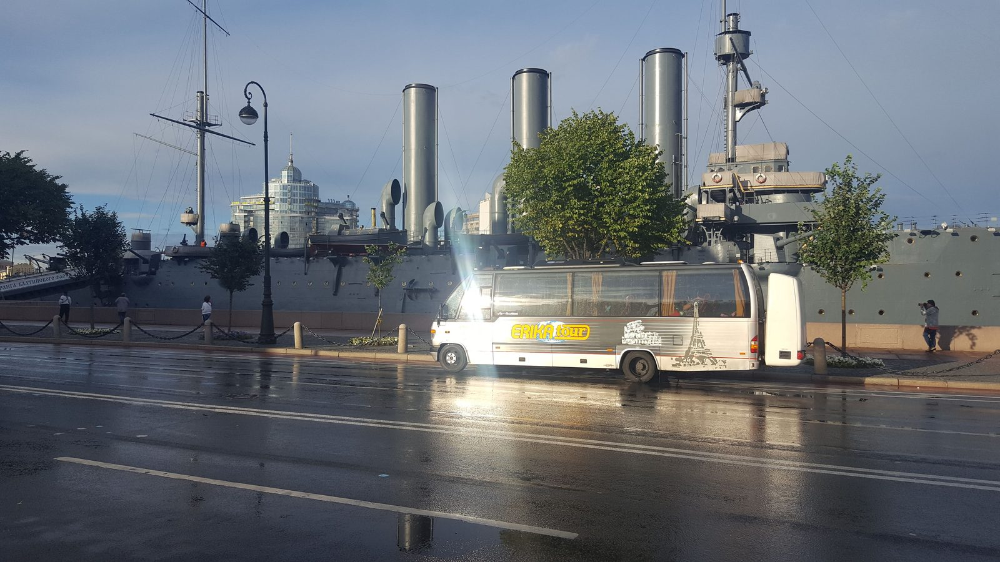
The cruiser Aurora behind the embankment road with a coach in Saint Petersburg (August 2018)
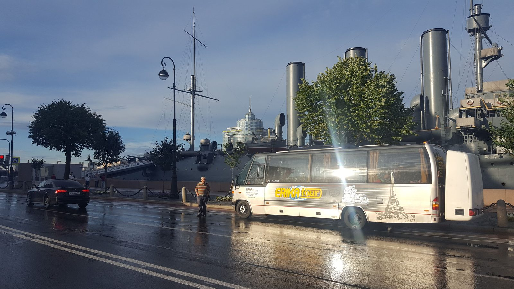
The cruiser Aurora behind the embankment road with a coach in Saint Petersburg (August 2018)